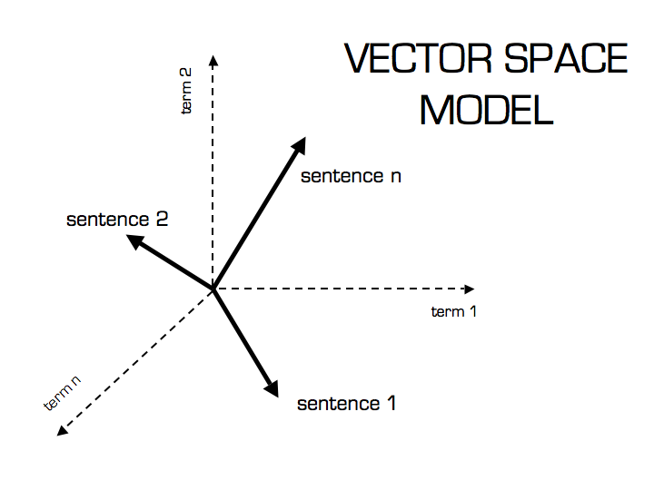

On the Feasibility of Automated Detection of Allusive Text Reuse
Enrique Manjavacas
Brian Long
Mike Kestemont
1 Motivation
Intertextuality
- “Interrelationships between texts that create new understandings”
- Materializes in different forms:
- Quotation
- Allusion
- Pastiche
- …
- Text Reuse: “study of the material form of intertextual relations”
Text Reuse Detection
- Previous work:
- Limited to (semi-)literal forms of text reuse
- Unclear extent of subjectivity in recognizing links
- Few benchmark corpora (except for the Bible)
- Contribution:
- Focus on allusive text reuse
- Model reader (dis)agreement
- Assess the computational feasibility of the task
2 Case Study: Bernard of Clairvaux (1090-1153)
Personalia
- Church Father from the 12th Century Renaissance
- Controversy with Peter Abelard
- Considered founder of the Cistercian order
- Involved in the Second Crusade
Written Production
- Very eloquent and prolific writer (Doctor Mellifluus)
- Mostly known for his numerous Sermons
- Extremely allusive style targeting the Bible
3 Dataset
- BiblIndex (thanks to Laurence Mellerin): forthcoming digital edition of Bernard
- 86 Sermones (
xmlfollowingTEIguidelines; ± 165k tokens) - Annotation of Biblical text reuse (Vulgata)
exact-quotationinexact-quotationallusion
Dataset Statistics
| Type | Count |
|---|---|
| exact-quotation | 1768 |
| inexact-quotation | 3150 |
| allusion | 876 |
Examples
Allusive Text Reuse Example 1
- Bernard (Sermo19.7.a) “parvulae quippe in Christo sunt, lacte et oleo nutriendae”
- Bible (Co.3.1) “et ego fratres non potui vobis loqui quasi spiritalibus sed quasi carnalibus tamquam parvulis in Christo”
Allusive Text Reuse Example 2
- Bernard (Sermo73.6.g) “ne forte contingat iustum pro impio conculcari”
- Bible (Jn.5.14) “[…] ecce sanus factus es iam noli peccare ne deterius tibi aliquid contingat”
Overlap
4 Text Reuse Detection (Information Retrieval Perspective)

- Two-step process
- Formulate query
- Retrieve references from document collection (Bible verses)
- Query formulation irrelevant in cases of lexical text reuse (quotation, paraphrasing)
5 How difficult is it for humans?
Highly interpretative, debatable annotation process... but how can we model the degree of interpretability?Inter-annotator Agreement Experiment
- Inter-annotator agreement coefficients
- Evaluate the quality of manual annotations
- Determine the upper-bound performance by human
- Focus on agreement on query formulation
Experimental Conditions
- Guideline: “Minimum span that is maximally allusive”
- Restrictions
- Continuous spans
- Selected query must include anchor
- 4 Annotators
- 60 randomly sampled instances
Agreement as overlap
- Agreement: tokens shared with the other annotator
- \(A(s_1,s_2) = LCS(s_1,s_2)\)
- Disagreement: tokens not shared with the other annotator
- \(D(s_1,s_2) = |s_1| + |s_2| - 2 \cdot LCS(s_1,s_2)\)
- Overlap
- \(O = \frac{A}{A+D}\)
Results

6 How difficult is it computationally?
Text Reuse Detection from an Information Retrieval Perspective
- Could lack of lexical overlap be alleviated with distributional semantics?
- How do different document representation/retrieval approaches perform?
- How important is manual query construction?
Evaluation
- Mean Reciprocal Rank: \(MRR(Q) = \frac{1}{|Q|} \sum_{j=1}^{|Q|}\frac{1}{|R_j|}\)
- Accuracy@20
Warning!
- Conditional probability of retrieving a link given a link
- Goal is to evaluate the feasibility of the task
Document Representation Methods

Purely Lexical
Cosine Distance on count-based BoW (± tf-idf):
- \(BOW\)
- \(TfIdf\)
Purely Distributional
Cosine Distance on embedding based BoW embeddings (± tf-idf)
- \(BOW_{emb}\)
- \(TfIdf_{emb}\)
Word Movers Distance over BoW Embeddings ( \(WMD\) )
Hybrid (Soft-cosine)
A generalization of cosine that allows for the incorporation of semantic similarity in the computation
Soft-cosine
Soft-cosine: Formulation
Removes the assumption that every feature is completely dissimilar to any other feature
- \(cos(d_1, d_2) = \frac{d_1 \cdot d_2}{||d_1||^2 ||d_2||^2}\)
- cosine: \(d_1 \cdot d_2 = \sum_i d_{1,i} d_{2,i}\)
- soft-cosine: \(d_1 \cdot d_2 = \sum_{i}\sum_{j} d_{1,i} \boldsymbol{S_{i,j}} d_{2,j}\)
Soft-cosine: How to estimate S?
- \(SC_{emb}\)
- \(S_{i,j} = cos(W_i,W_j)\)
- \(SC_{wn}\)
- \(S_{i,j} = \frac{1}{|T_i \cap T_j|}\)
Results

How important is manual query construction?

How important is the word embedding space?
All spaces trained on a dataset by D. Bamman (8.5 GB OCR’d latin)

How does semantic information help (visualization)
Compute the relative contribution of each word to the total similarity score


7 Conclusions
- Difficulty
- Still missing over 1/2 of cases in a best-case scenario setting
- Assuming manual query formulation
- Generalizable to other authors?
- Supervised modeling practically unfeasible due to data scarcity